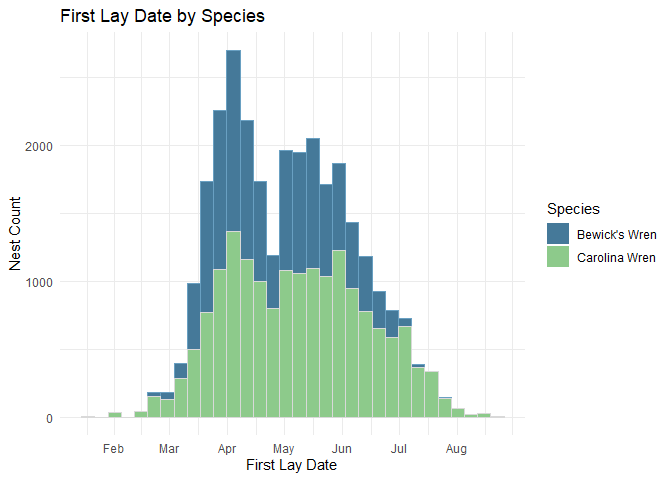

Development Tasks 🚧
This repository is in early development with plans to add additional functions to create an R package to facilitate accessibility.
🔲 Internal testing
Overview 📌
NestWatch is a participatory science project operated by the Cornell Lab of Ornithology. Since 1965, members of the public have been following a standardized protocol for observing and reporting the nests of birds in the United States and Canada (and more recently, globally). This data set contains raw nest records submitted to NestWatch, including millions of nest check observations from hundreds of thousands of nest attempts (>750,000 in 2025). The purpose of this repository is to provide a collection of functions to aid in accessing and analyzing the wealth of nesting data contained in the NestWatch database.
The metadata paper associated with this dataset (Bailey et al. 2023) is critical for understanding and interpreting data fields and their contents. This dataset is scheduled for updates annually on or about January 31. Relevant details can also be found on the NestWatch website here.
Installation 💻
This package is under active development and is likely to have bugs and unexpected issues. Presently, the package exists off-CRAN in the public engagement-center/nestwatchR GitHub repository. To install the package on your local machine, run the following code:
if (!requireNamespace("remotes", quietly = TRUE)) {
install.packages("remotes")
}
# Install nestwatchR package in R
remotes::install_github("engagement-center/nestwatchR")
## Data access 🌐
Data from NestWatch are free to access either from the nw.getdata() function in R or as a direct download from the Mendeley Data Archive or NestWatch website. NestWatch Open Dataset by Cornell Lab of Ornithology is licensed under CC BY-NC 4.0. We encourage researchers seeking to conduct formal analyses to use these data. As with any dataset, knowing the data structure, understanding the metadata, grasping the data collection protocols, and being aware of the unique aspects of the program are all critical for conducting analyses and interpreting results in ways that provide meaningful insights. Prior to analysis, we encourage all users of NestWatch Data to read the article “Download Raw NestWatch Data for Analysis” article on our website.
Versions 📝
This package is on Version 0.0 and will be updated to maintain functionality and improve accessibility to the NestWatch datasets. If you encounter issues while using the package, you can submit an issue on GitHub or contact us directly.
The NestWatch Open Dataset is updated annually, by or around 31 January, with the previous year’s nesting records. NestWatch also updates the database with historical nest records being archived from other projects. To improve reproducibility in NestWatch analyses, each version of the dataset is archived in Mendeley, and each specific version can be downloaded either using the nw.getdata(version = ) function or by a direct download from the Mendeley archive.
Citations 📖
If you use the NestWatch Open Dataset or this R package, please cite:
Dataset (replace with appropriate version # and year): Bailey, R. L., L. Larson, D. Bonter. 2026. “NestWatch Open Dataset.” Mendeley Data, V6. DOI: 10.17632/wjf794z7gc
Data Paper: Bailey, R. L., L. Larson, and D. N. Bonter. 2024. “NestWatch: An Open-Access, Long-Term Data Set on Avian Reproductive Success.” Ecology 105(2): e4230. DOI: 10.1002/ecy.4230
NestWatch R Package (replace appropriate version # and year):
Savides, K., R. L. Bailey, & D. N. Bonter. 2025. NestWatch Data Products (Version 0.00.00) [Computer software]. https://github.com/engagement-center/2024-NestWatch-Package-Internal
Vignettes 📚
For full function documentation, including a series of vignettes covering introductory usage of NestWatch data, please see the following Vignettes:
- Introduction to NestWatch Data and Data Access: covers data access, available data products, definitions of data fields, and an introduction to structure and format of data files
- Conduct Common NestWatch Data Cleaning Procedures: demonstrates how and when to use a variety of common data cleaning procedures designed for NestWatch data
- Estimate NestWatch Summary Dates: demonstrates functions to estimate missing summary values
- Filter NestWatch Data on Finer Scales: demonstrates the use of species-level data filters and functions to estimate missing values
Quick Start 📒
This quick start guide shows how to download data and plot the first lay dates of two species from the NestWatch Open Dataset: Carolina and Bewick’s wrens. Note that here we force the download of Version 1 of the NestWatch dataset for reproducibility. When running your own analyses, you will likely want to download the latest version of the NestWatch data (see nw.getdata() for more information).
# Load NestWatch Package
library(nestwatchR)
library(dplyr)
# Download NestWatch dataset by version
nw.getdata(version = 1)
# nw.getdata() # no argument will default to downloading the latest version
# Merge the Attempts and Checks files
nw.mergedata(attempts = NW.attempts, checks = NW.checks, output = "merged.data")
nrow(merged.data)
#> [1] 2639824
# Filter the dataset to include just Carolina and Bewick's wrens
wrens <- merged.data %>% filter(Species.Code %in% c("carwre", "bewwre"))
nrow(wrens)
#> [1] 40290
glimpse(wrens)#> Rows: 40,290
#> Columns: 54
#> $ Attempt.ID <chr> "A1000045", "A1000045", "A…
#> $ Location.ID <chr> "L56654", "L56654", "L1268…
#> $ Latitude <dbl> 34.68472, 34.68472, 30.614…
#> $ Longitude <dbl> -98.40583, -98.40583, -98.…
#> $ Subnational.Code <chr> "US-OK", "US-OK", "US-TX",…
#> $ Species.Name <chr> "Carolina Wren", "Carolina…
#> $ Species.Code <chr> "carwre", "carwre", "bewwr…
#> $ Year <dbl> 2006, 2006, 2006, 2006, 20…
#> $ Elevation.m <dbl> 344.7000, 344.7000, 316.40…
#> $ Height.m <dbl> 1.6002, 1.6002, 1.6154, 1.…
#> $ Substrate <chr> "nesbox", "nesbox", "nesbo…
#> $ Substrate.Relationship <chr> "in", "in", "in", "in", "i…
#> $ Substrate.Other.Description <chr> NA, NA, NA, NA, NA, NA, NA…
#> $ Predator.Guard <chr> NA, NA, "baffle", "baffle"…
#> $ Predator.Guard.Other <chr> NA, NA, NA, NA, NA, NA, NA…
#> $ Cavity.Entrance.Diameter.cm <dbl> 3.810, 3.810, 3.810, 3.810…
#> $ Entrance.Orientation <chr> "ne", "ne", "sw", "sw", "s…
#> $ Habitat.1m <chr> NA, NA, NA, NA, NA, NA, NA…
#> $ Habitat.100m <chr> NA, NA, NA, NA, NA, NA, NA…
#> $ Location.Entry.Technique <chr> "BIRDHOUSE_HIST:SELF", "BI…
#> $ Observer.ID <chr> "obsr1309", "obsr1309", "o…
#> $ First.Lay.Date <date> NA, NA, NA, NA, NA, NA, N…
#> $ First.Lay.Date.Estimated <dbl> NA, NA, NA, NA, NA, NA, NA…
#> $ Visited.During.Egg.Laying <dbl> NA, NA, NA, NA, NA, NA, NA…
#> $ Hatch.Date <date> NA, NA, NA, NA, NA, NA, N…
#> $ Hatch.Date.Estimated <dbl> NA, NA, NA, NA, NA, NA, NA…
#> $ Fledge.Date <date> NA, NA, NA, NA, NA, NA, N…
#> $ Fledge.Date.Estimated <dbl> NA, NA, NA, NA, NA, NA, NA…
#> $ Young.Fledged <dbl> NA, NA, NA, NA, NA, NA, NA…
#> $ Clutch.Size <dbl> NA, NA, NA, NA, NA, NA, NA…
#> $ Young.Total <dbl> NA, NA, NA, NA, NA, NA, NA…
#> $ Unhatched.Eggs <dbl> NA, NA, NA, NA, NA, NA, NA…
#> $ Outcome <chr> "f", "f", "f6", "f6", "f6"…
#> $ Attempt.Entry.Technique <chr> NA, NA, NA, NA, NA, NA, NA…
#> $ Visit.ID <chr> "S2489482", "S2489483", "S…
#> $ Visit.Datetime <dttm> 2006-07-10, 2006-08-08, 2…
#> $ Visit.Time.Valid <dbl> 0, 0, 0, 0, 0, 0, 0, 0, 0,…
#> $ Nest.Status <chr> NA, NA, "in", "cn", NA, NA…
#> $ Adult.Activity <chr> NA, "no", NA, NA, NA, NA, …
#> $ Young.Status <chr> NA, NA, NA, NA, NA, NA, NA…
#> $ Management.Status <chr> NA, "nm", NA, NA, NA, NA, …
#> $ Host.Eggs.Count <dbl> 5, NA, NA, NA, 4, 6, 1, 1,…
#> $ Host.Eggs.Present.Uncounted <dbl> 0, 0, 0, 0, 0, 0, 0, 0, 0,…
#> $ Live.Host.Young.Count <dbl> NA, NA, NA, NA, NA, NA, NA…
#> $ Live.Host.Young.Present.Uncounted <dbl> 0, 0, 0, 0, 0, 0, 0, 0, 0,…
#> $ Dead.Host.Young.Count <dbl> NA, NA, NA, NA, NA, NA, NA…
#> $ Dead.Host.Young.Present.Uncounted <dbl> 0, 0, 0, 0, 0, 0, 0, 0, 0,…
#> $ Brood.Parasite.Eggs.Count <dbl> NA, NA, NA, NA, NA, NA, NA…
#> $ Brood.Parasite.Eggs.Present.Uncounted <dbl> 0, 0, 0, 0, 0, 0, 0, 0, 0,…
#> $ Brood.Parasite.Live.Young.Count <dbl> NA, NA, NA, NA, NA, NA, NA…
#> $ Brood.Parasite.Live.Young.Present.Uncounted <dbl> 0, 0, 0, 0, 0, 0, 0, 0, 0,…
#> $ Brood.Parasite.Dead.Young.Count <dbl> NA, NA, NA, NA, NA, NA, NA…
#> $ Brood.Parasite.Dead.Young.Present.Uncounted <dbl> 0, 0, 0, 0, 0, 0, 0, 0, 0,…
#> $ Visit.Entry.Technique <chr> NA, NA, NA, NA, NA, NA, NA…
library(ggplot2)
# Format First.Lay.Date as a date
wrens$First.Lay.Date <- as.Date(wrens$First.Lay.Date)
# Filter out NA values of First Lay Date, force all attempt years to 2024 for visualization
data <- wrens %>% filter(!is.na(First.Lay.Date)) %>%
mutate(First.Lay.Date = as.Date(paste0("2024-", format(First.Lay.Date, "%m-%d"))))
# Plot the data in ggplot
ggplot(data, aes(x = First.Lay.Date, fill = Species.Name)) +
geom_histogram(binwidth = 14, color = "grey60") +
facet_wrap(~Species.Name, ncol = 2) + # Two side-by-side plots
scale_fill_manual(values = c("#8DCA8B", "#457999")) + # Fill colors
scale_x_date( # Display nice month labels
breaks = seq(as.Date("2024-02-01"), as.Date("2024-08-01"), by = "month"),
labels = c("Feb", "Mar", "Apr", "May", "Jun", "Jul", "Aug")) +
labs(x = "First Lay Date", y = "Nest Count", fill = "Species:") +
theme_minimal() +
theme(legend.position = "bottom", # Single legend at the bottom
strip.text = element_blank(), # Removes facet titles
panel.spacing = unit(1, "cm")) # Adds space between facet panels
Here we plot two histograms to inspect the distribution of First Lay Dates between Bewick’s and Carolina Wrens. Note that the NestWatch dataset continues to grow with each breeding season, so the numbers shown in the examples on this site will likely be different from what you see using the most current version of the Open Dataset.